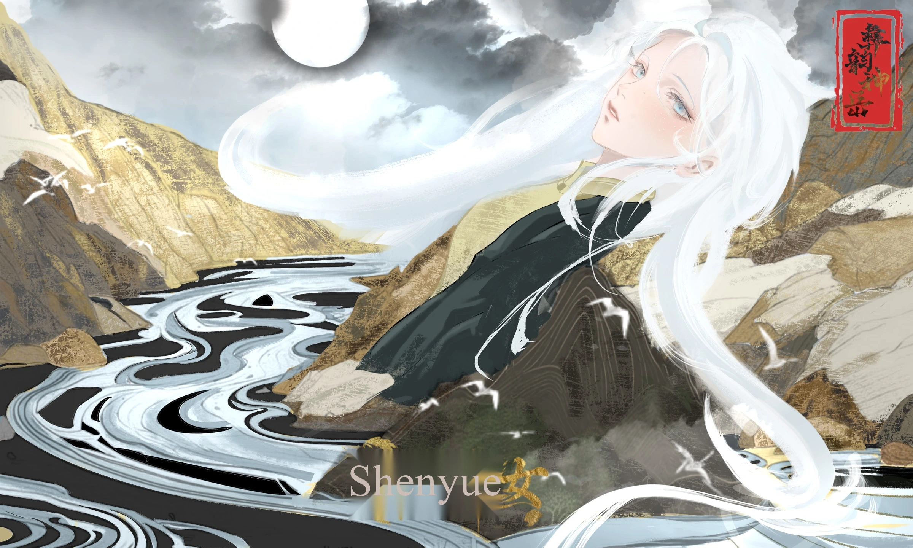
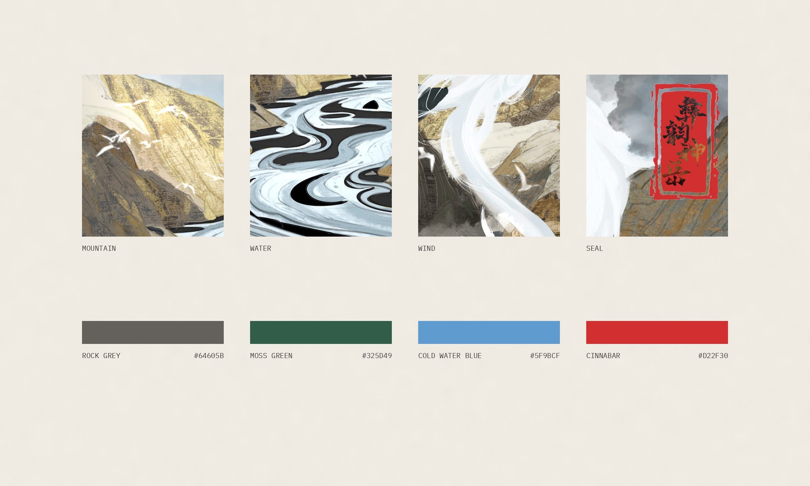
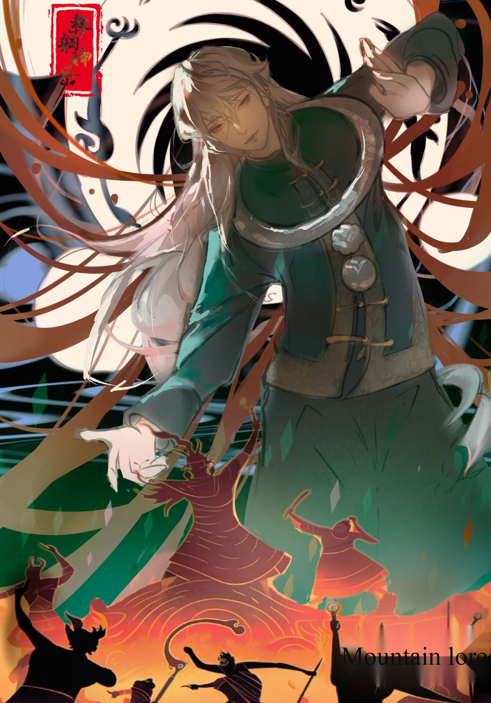
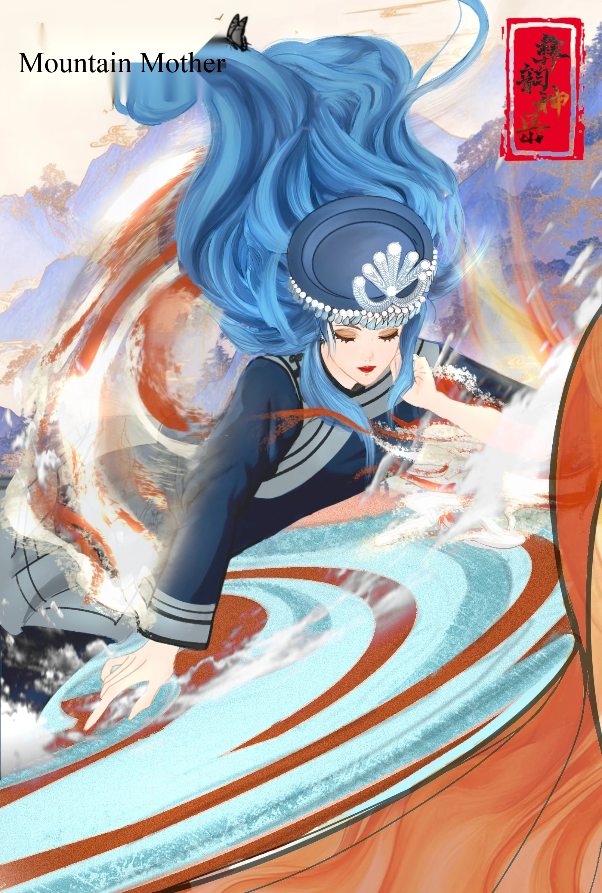
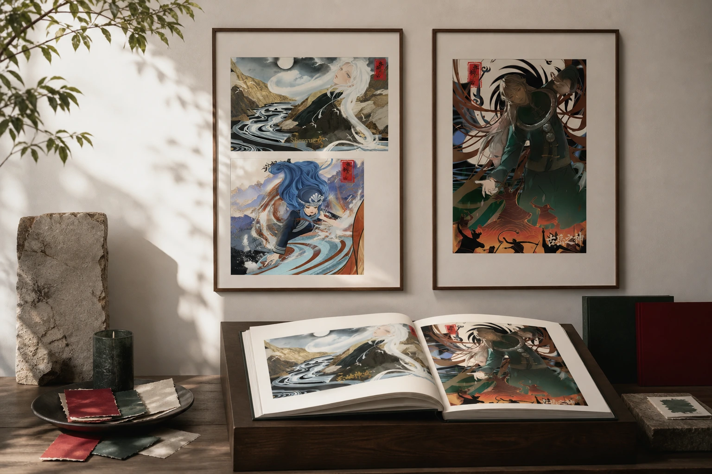
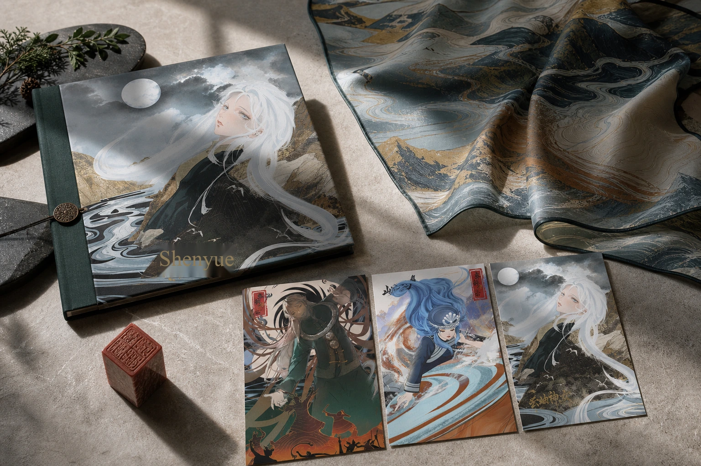

Narrative illustration · Self-initiated
Shenyue
Mountain, wind and water shape each of the three spirits.
Character design and a series of illustrations drawn from mountain-spirit folklore.
The three spirits share pattern, colour and a flowing path, and extend into publishing and collectibles.

Premise
From folklore,
rules that can keep growing.
We gathered clues from mountain-spirit stories: landform, waterways and the rhythm of ritual. The aim was not three single portraits, but a set of rules that could keep producing characters and scenes.
Approach
Mountain, water, wind, seal
The mountain holds the structure, water forms the path, and wind connects the figures to the scene. Rock grey, moss green and cold water blue form the core; cinnabar red is kept for seals and ritual points.
bearing and watch
migration and memory
breath and echo
ritual and closing mark
Method
- Gathering imagery
mountain spirits, landform, waterways, ritual rhythm
- Extracting rules
mountain, water, wind and seal become a reusable visual grammar
- Character narrative
three views: Watch, Guide and Echo
- Scale studies
testing the series in publishing and collecting contexts



Three mountain spirits,
three ways of seeing a place.
Watch is formed of peaks and moonlight. Guide combines fire, vines and a human form. Echo opens the space through water and long hair.
The three can be shown together or apart.


From one image to a world you can read
The three originals are arranged as vista, figure and detail.
Seals, mountain forms and waterlines taken from them extend to art books, collector cards, scarves and paper goods. Application images test scale; they are not location photography.

Outcome
A mythology
with a visual grammar.
Three original illustrations, a set of reusable visual rules and a plan for publishing and collectible extensions.
Concept, character design, illustration series and application planning by North Window Light. Exhibition and collectible images are concept visuals.
View other projects ↗